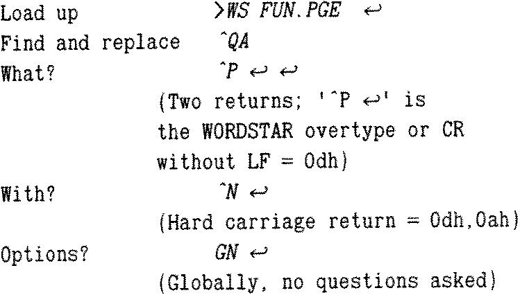

80-Bus News |
Spring 1985 · Volume 4 · Issue 1 |
| Page 13 of 31 |
|---|
permutation unless there is some already existing reason for making this sort of hybrid.
The choices are more more limited than they were (no 35/40 track drive options for instance) but still allow the same degree of system flexibility. CP/M means that there is acres of software available (both proprietory new stuff at high prices and the Curates Egg which can be aquired from all sorts of places (CP/M User Group et al) at very modest prices).
So an upgraded Nascom is still a very much viable proposition, what you end up with might appear a bit odd (no flashy box) but still good value for money, despite the exhortations from the various big manufacturers to buy 16 bit machines. To me there seems little point in ditching the dear old Z80 based systems as the availability and cost of good 16 bit software is not justified for home use and still very expensive for business use. There is very little in the way of all the useful utilities which are available for CP/M 80 (as opposed to CP/M 86 or MSDOS). Anyway, most of the currently available 16 bit software seems to extremely wasteful of RAM space and very very slow when compared to its 8 bit equivalent. So much for the increased crunching power of 16 bit processors, not many of the proprietory software sources seem to be interested in using it.
Rudd Thornton of Largs writes “Having saved Prestel pages with Pretzel 2 how to get them printed as Pretzel 2 saves the Prestel screen image which only contains carriage returns, not CR/LF’s? The answer is Wordstar.
The new FUN.PGE will print correctly with PIP or under WS.
This is a simple little tweak and will work with wordy pages (but of course no graphics). Pretzel 2 now has a graphics printer option for those interested, which will work with any Epson compatible printer, it costs £11.50 from Henry’s.
Peter Curtis, the man who wrote the original NASPEN, GEMPEN and Diskpen text processors has recently ‘finished’ his latest creation called ‘Gateway’ with its companion program ‘Pathway’. I say ‘finished’ as it has been released on an unsuspecting public in it’s current form to see what reaction it creates. There’s bound to be some user feedback and he hopes to produce a final version soon (with free updates to those who bought the earlier versions). Unlike Peter’s earlier programs this program is not based on a simple idea, rather it is an attempt to make a simple job of an extremely complex idea. In the main it succeeds. Gateway is not system dependent, it will work on any CP/M 80 machine.
The basic idea of Gateway is to allow you to tag acres of text, turning it into a database without the limitation of fields or other boundaries. Searches take place over lines, paragraphs or the chapters or even the whole file, with the ability to work within user inserted boundaries in the form of default keys inserted into the text. The tagging can be automatic or stop for user intervention, and the tagging may take place using logical operators, AND, OR or NOT or on straight searches. This allows relational searching to be achieved, cross referencing things within the text. When I say text, Gateway can handle diskfuls of text at once, across large numbers of files. So a Winnie full of technical instruction manuals is not outside its scope.
During the search and tagging process, Gateway builds up its own ‘tag’ and ‘directory’ files telling it where it found what it was looking for. These are then used to sort and extract data as required, shifting the text into different orders, taking related extracts, merging bits from different files into one, and so on. The original text files remain untouched.
The Gateway defaults (and any changes to the defaults) are stored in a small file which Gateway constructs for itself called a XXX.LNK file. These defaults allow the user to swop jobs or to leave the system and then pick up work at the point where it was left. XXX.LNK files are constructed for each job, along with the ‘tag’ and ‘directory’ files for the job in hand. So different work can be carried out on the same text if desired.
Gateway itself is not too difficult to drive, it has a very informative ‘Help’ facility which is a Gateway cross-referenced file itself. This is coupled with an intelligent auto prompt, which prompts in full for inexperienced users or omits the prompt options for the more experienced. The intelligent bit is that the prompt selects the next most likely command within the context of what the program was doing. In most cases a series of returns is all that is required to drive it. Of course you can break out of the automatic sequence at any time, simply by entering a new command instead of accepting the command offered. Most command inputs occur at the bottom of the screen, the remainder of the screen being used for text display. When Gateway finds what it’s looking for, the text is displayed with
| Page 13 of 31 |
|---|